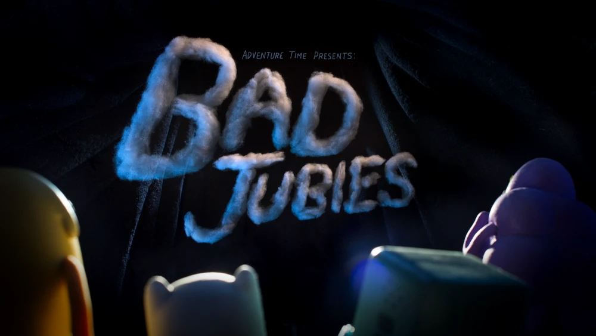
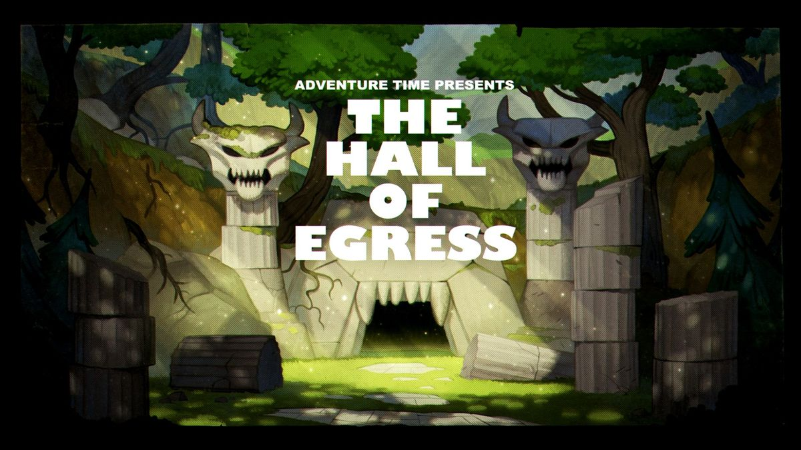

-
Sinopse:
Um dos maiores segredos do Reino Doce é revelado graças ás ordens do Rei de Ooo sobre Finn e Jake.
-
Sinopse:
Bonnibel e Marceline passam um tempo juntas após Rei de Ooo tomar o controle do Reino Doce.

Um dos maiores segredos do Reino Doce é revelado graças ás ordens do Rei de Ooo sobre Finn e Jake.

Bonnibel e Marceline passam um tempo juntas após Rei de Ooo tomar o controle do Reino Doce.

A vida de Cerejinha muda completamente após a chegada de um visitante.

Rei de Ooo faz Finn e Jake embarcarem em uma missão á procura de cogumelos voadores.

BMO troca de lugar com Futebol por um dia.

Arco Estacas
")
Moe visita a Casa na Árvore para uma festa de aniversário surpresa para BMO.
Enquanto a missão de BMO está à beira do desastre, ele descobre quem Moe realmente é.

Viola tem um papel em uma peça por uma nova diretora, a Princesa Caroço.

BMO convence seus amigos para jogarem um jogo de roleplay de Cowboy.

Finn e Jake tentam encontrar o Presidente Golfinho antes que o Vice Presidente Baiacu tome controle.

Em uma noite muito assustadora, Finn e Jake ficam cara a cara com um mito urbano.

Finn, Jake, Princesa Caroço e BMO buscam abrigo após serem pegos por um clima mortal feito em stop motion.

Rei Gelado sofre uma perda dolorosa e cabe a Finn e Jake encontrar o culpado.

Finn leva um grupo de crianças encrenqueiras à um acampamento.

Prismo precisa de Finn e Jake para parar um evento catastrófico que aconteça em algum lugar do multiverso.

Encurralado e sozinho, Finn deve desvendar o enigma de uma caverna estranha sem saída.

Jake descobre que Finn tem tido encontros clandestinos com Uma Maga Poderosa, mas o que será eles estão fazendo?

Finn e Jake descobre uma conspiração depois de se infiltrar nas fileiras dos Guardas Banana.